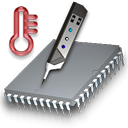
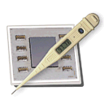
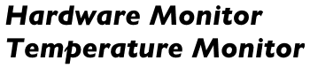

|  |  |
Copyright © 2003 - 2013 by Marcel Bresink Software-Systeme. All rights
reserved.
This application is protected by international copyright laws. The
software and any of its documents must not be redistributed without prior
written consent from the author.
Apple, Macintosh, Power Mac, Power Macintosh, iMac, PowerBook, iBook, and MacBook are registered trademarks of Apple Inc. Analog Devices is a registered trademark of Analog Devices, Inc. Dallas Semiconductor is a registered trademark of Dallas Semiconductor Corporation. Hewlett-Packard, PA-RISC and VAX are trademarks of Hewlett-Packard Development Company. Intel, Pentium, i486, i860, Core Solo and Core Duo are registered trademarks of Intel Corporation. Maxim is a registered trademark of Maxim integrated products. National Semiconductor is a registered trademark of National Semiconductor Corporation. nVidia is a registered trademark of NVIDIA Corporation. Mach is a research project of Carnegie-Mellon University. Motorola and AltiVec are trademarks of Motorola, Inc. IBM and PowerPC are registered trademarks of International Business Machines Corporation. ATI and RADEON are registered trademarks of ATI Technologies, Inc. Logitech is a registered trademark of Logitech. Trademarks or service marks are used for identification purposes only.